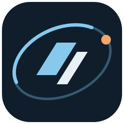

OFFLINE ROCKET LEAGUE CAREER · TEST BUILD
My Career Training
A solo Rocket League career played through a personalized menu in offline mode.
24 October 2026 · Windows 64-bit · Portable ZIP · 267 MB
How to start: Close Rocket League, extract the entire ZIP, open the extracted folder and run MyCareerTraining.exe. Keep all the files together. The app starts the offline session and manages its temporary plugin setup.
What you need: Your installed Steam copy of Rocket League and BakkesMod. This package is already compiled; Visual Studio, Python and Cursor are not required. This candidate targets the Steam build recorded on SLAVAPC (Steam build ID 25914621); other builds are refused.
Included for testing: My Career, Training, Garage, Workshop, Community and Settings routes, with career management, local appearance options and installed Steam Workshop map selection.
Test status: Automated package and code checks passed. The custom menu, button navigation, gameplay and restoration of the normal game still need in-game testing. This is a development candidate, not a verified finished release.
Current limits: Car bodies use your owned Garage choices. Imported local maps are not launchable yet. Community plugins can be downloaded and cached; only the reviewed Speedflip Trainer has a trial activation route.
Offline sessions: Gameplay is offline; normal account and cloud connections are not blocked. Use the app's Exit control and let recovery finish before starting normal Rocket League.